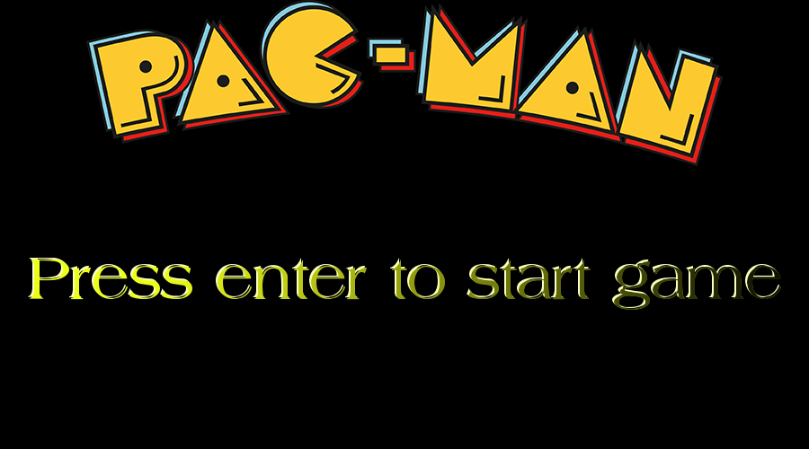

Pacman C++
Project Overview
I reinvented the classic Pacman formula using C++ and the S2D framework, stripping away traditional walls to create a high-intensity survival experience. In this open area, Pacman must evade dozens of relentless ghosts with basic AI while collecting all munchies and cherries to win. The project features:
- Audio integration via OpenAL
- Complete game loop with pause menu & win screen
Key Features and Gameplay
Core Mechanics
- Open area Pacman: Free movement in a area with no walls
- Collectibles:
- Munchies (1 point) - standard circle object
- Cherry (5 points) - Cherry fruit that gives more points
Audio Implementation (OpenAL)
- Munchie collection sound - pop.wav
- Cherry crunch pickup - crunch.wav
UI elements
- Pause Menu with resume (ESC key)
- Custom made win screen
Project Impact
- Innovation: Transformed a maze game into an arena survival challenge
- Technical Growth: improved understanding of C++ game architecture and OpenAL
